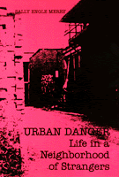

<body bgcolor="#FFFFFF" text="#000000" link="#0000FF" vlink="#CC0000" alink="#CC0000"><center><hr width="350" size="1" align="center" noshade>A study of crime and fear in the lives of residents of a high-crime multi-ethnic housing project<hr width="350" size="1" align="center" noshade><p><a href="https://cdcshoppingcart.uchicago.edu/Cart/ChicagoBook.aspx?ISBN=9780877222194&&PRESS=temple" target="_top">Buy this book!</a> | <a href="https://cdcshoppingcart.uchicago.edu/Cart/Cart.aspx?PRESS=temple" target="_top">View Cart</a> | <a href="https://cdcshoppingcart.uchicago.edu/Cart/Cart.aspx?PRESS=temple" target="_top">Check Out</a></p><p></p></center><!--none//--><h1>Urban Dangers</h1>
<H2>Life in a Neighborhood of Strangers</H2>
<h3>Sally Engle Merry</h3>
<P>cloth 0-87722-219-3 $29.95, May 81, <FONT COLOR=#990033>Out of Print</FONT>
<br>paper 0-87722-425-0 $18.95, May 86, <FONT COLOR=#990033>Out of Stock Unavailable</FONT>
<BR> 278 pp
</P><BLOCKQUOTE><I>"A provocative exercise in ‘urban anthropology.’"</I>
<br>&#151<b>Jonathan Yardley</b>, <I>The Washington Post</I><I></I></BLOCKQUOTE>
<p>Multiple locks, vicious dogs, cans of mace, training in karate&#151city people have tried everything to cope with their sense of danger at home and on the streets. The most common strategy, probably, is avoiding dangerous situations or simply living with the problem. Yet fear is not very well related to crime statistics, people of different cultures react differently to the same neighborhood, and people have very different understandings of what danger is.
<p>The author spent many months, talking to the residents of a high-crime multi-ethnic housing project in a major American city. The project is about 52 percent Chinese, 27 percent black, 12 percent white, and 6 percent Hispanic. We see the project through the eyes of a Chinese woman in her eighties, a black teenager, a Syrian businessman, a black working mother, a Chinese student, and many others. And the ways they see the same streets and corridors are shockingly different.
<p>In this neighborhood of strangers, nextdoor neighbors may rarely speak to each other, may view each other as dangerous, and may hold cruel stereotypes of one another. For example, some groups think that Chinese apartments teem with immigrant humanity and hanging chickens, while they are reluctant to confront Chinese youths because of their presumed expertise in the martial arts.
<p>The author, who is white, made friends with members of the black gang in the area, who introduced her to their network of friends; with the aid of several Chinese students, she was also able to gain access to Chinese households and secure translations of Chinese accounts of victimization. Those who committed the purse snatching and assaults were also willing to talk about their perception of likely victims and places for crime.
<p>Danger is relative. The laundromat, the parking garage, the project courtyard&#151these could be friendly or fearsome places to the different cultural groups. Besides describing these present-day differences in perception, the author explores the meaning of urban danger in other times and countries. In nineteenth-century American cities, for example, the Irish were part of the "dangerous classes" largely because they frequented bars and Catholic churches. Although personal assaults usually take place between people who know each other, it is most often the stranger, the foreigner, the one who is different, who is feared and labeled "dangerous."
<BR>&nbsp;<h2>Reviews</h2>
<p><I>" ...excellent...recommended reading for anyone interested in the fear of crime."</I>
<br>&#151<b><I>Crime & Delinquency</I></b>
<p><I>"Merry has written one fine ethnography. It is fine for several reasons: (1) it deals with an issue of broad social concern&#151urban crime&#151in a way that uses ethnography’s ability to juxtapose actors ' meanings and institutional facts so that the relationship between the two can be explored; (2) it blends the ethnographer’s presence and anecdotal and systematic materials in a way that smoothly follows the contours of the discussion; (3) it presents historical and comparative sources to develop a tentative theory that generalizes the pattern of which the ethnography is an instance; and (4) its style allows access to non-anthropological readers..."</I>
<br>&#151<b><I>American Anthropologist</I></b>
<p><I>"...a useful contribution to the growing literature of the fear of crime in cities."</I>
<br>&#151<b><I>Choice</I></b>
<p><I>"...an engaging and informative book. She [Merry] shows us that our perceptions have more bearing than we might think on the security of urban life."</I>
<br>&#151<b><I>The Christian Science Monitor</I></b>
<BR>&nbsp;<H2>About the Author(s)</H2>
<P><b>Sally Engle Merry</b> is Associate Professor of Anthropology at Wellesley College. She is currently working on a book on law and community in America.</P>
<BR><H2>Subject Categories</H2>
<p><A HREF="/tempress/urban.html" TARGET="_top">Urban Studies</a>
<BR><A HREF="/tempress/anthropology.html" TARGET="_top">Anthropology</a>
</p>
<p align="center"><a href="https://cdcshoppingcart.uchicago.edu/Cart/ChicagoBook.aspx?ISBN=9780877222194&&PRESS=temple" target="_top">Buy this book!</a> | <a href="https://cdcshoppingcart.uchicago.edu/Cart/Cart.aspx?PRESS=temple" target="_top">View Cart</a> | <a href="https://cdcshoppingcart.uchicago.edu/Cart/Cart.aspx?PRESS=temple" target="_top">Check Out</a></p><p><font face="Arial" size="1"><a href="copyright.html" onMouseOver="window.status='Web Copyright Policy';return true;" onMouseOut="window.status=''" title="Web Copyright Policy">&copy;</a> 2015 <a href="http://www.temple.edu" target="new" onMouseOver="window.status='Link to Temple University home page';return true;" onMouseOut="window.status=''" title="Link to Temple University home page">Temple University</a>. All Rights Reserved. http://www.temple.edu/tempress/titles/220_reg.html</font></p>